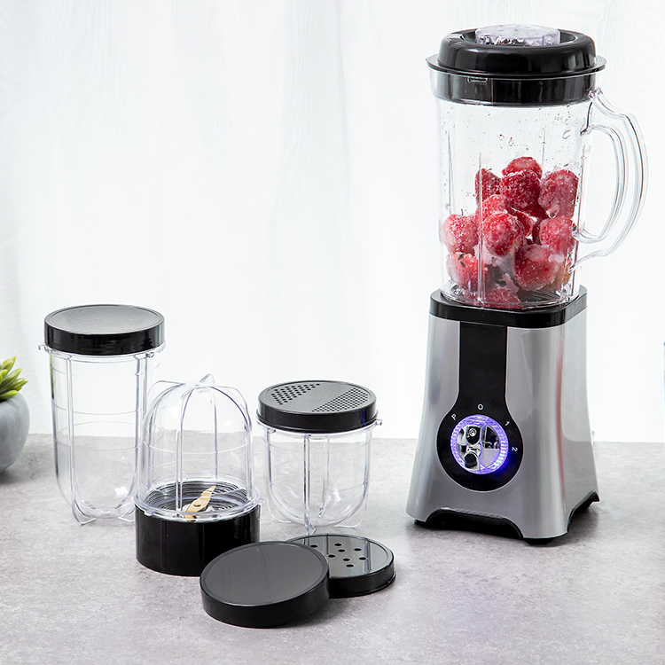
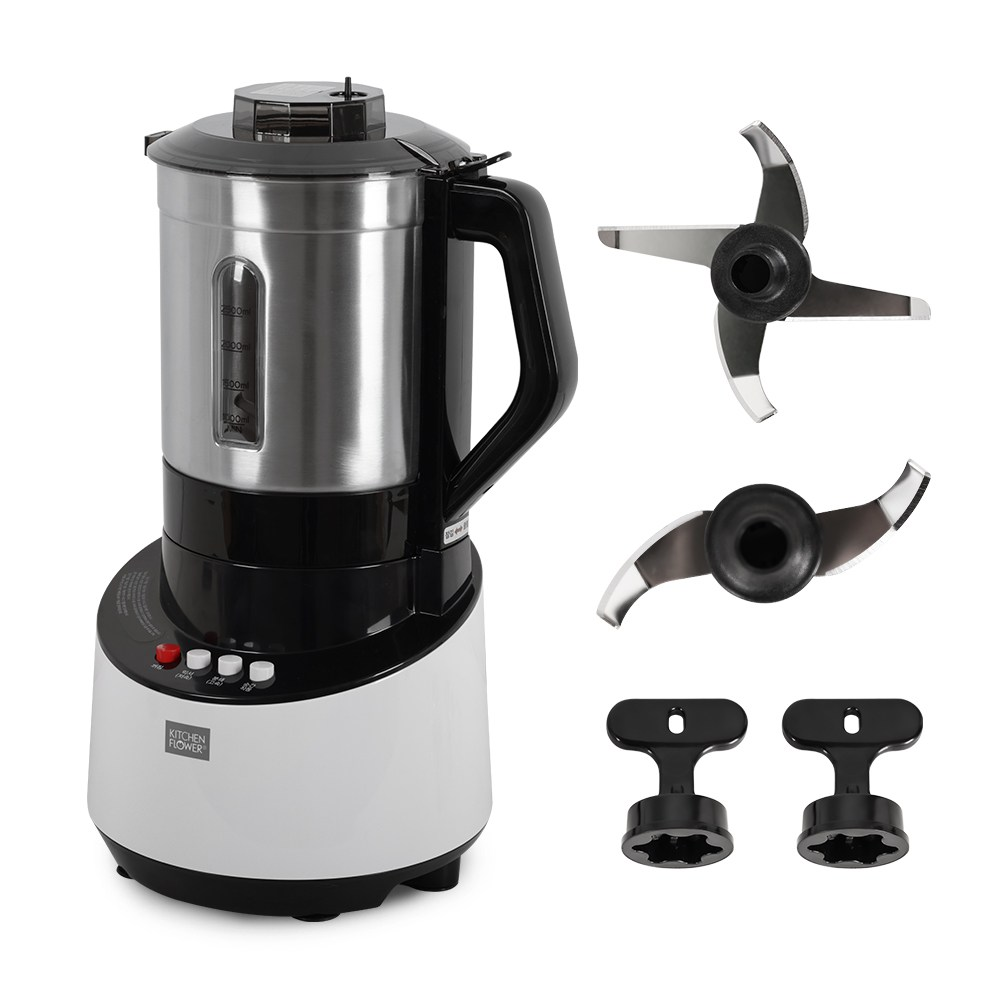
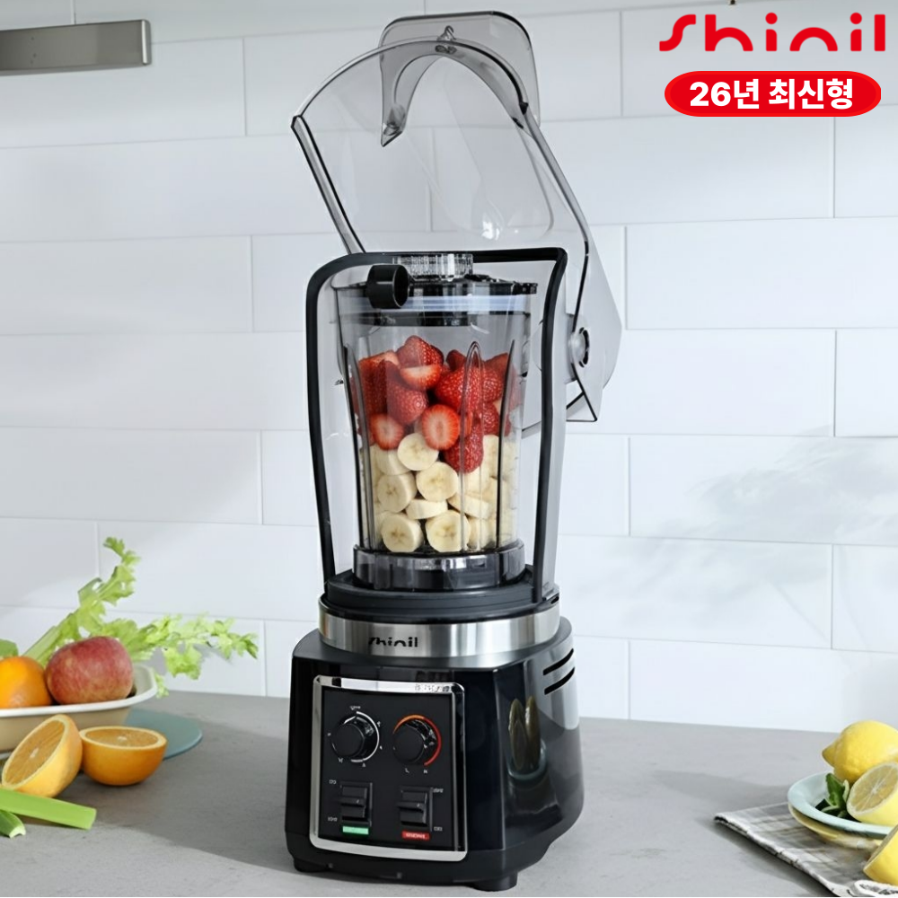

홈 › 제품리뷰 › 주방/조리
믹서기, 소형 다용도 vs 대용량 스텐
작성: 생활서식 모음 · 2026-07-13
파트너스 활동의 일환으로 일정액의 수수료를 지급받습니다
🛒 오늘의 쿠팡 특가 보러가기 →
믹서기, 샀는데 얼음이 안 갈리고 덩어리 남은 적 없나요?
핵심은 "출력(W)과 용량, 소음" 3대 를
"이유식·소량" "가족 주스·대용량" "얼음·스무디 곱게"용도별 정답 까지 담았으니
📋 목차
믹서기, 소형 다용도 vs 대용량 스텐 — 결론 먼저 스펙 비교표: 한눈에 보기 믹서기 고를 때 봐야 할 4가지 소량이냐 대용량이냐, 뭘 사야 할까? 자주 묻는 질문 (FAQ) 결론: 한 줄 요약
믹서기, 소형 다용도 vs 대용량 스텐 — 결론 먼저
믹서기는 "출력(W)과 용량" 이 8할이에요.키친플라워 4.5L 스텐 같은 대용량이 무난합니다. 이유식·소스 등 소량 위주면 소형 다용도로 충분하고, 얼음·냉동과일을 곱게 갈거나 저소음까지 원하면 초고속 전문가용입니다.
1 이유식·소량 (가성비 초이스)
가성비

3만원대 소형 다용도
1. 홈플래닛 소형 다용도 믹서기
3만원대 소형 다용도 이유식·소스·다지기 겸용 설거지 간편한 작은 용량
대용량은 아니지만
추천 대상
이유식·소스·양념 등 소량 조리가 많은 분 1~2인 가구로 큰 믹서기가 부담인 분 다지기 등 다용도로 쓰고 싶은 분 장점
3만원대로 부담 없이 소형 믹서기를 마련 이유식·소스·다지기 등 소량 다용도로 활용 작은 용량이라 세척·보관이 간편 단점
출력·용량이 작아 얼음·냉동과일 다량, 가족용 대용량엔 부족 이 제품은 소량·다용도용 입니다. 가족 주스·대용량이면 2번, 얼음·냉동과일 곱게+저소음이면 3번으로 가세요. "이유식·소량"이면 가성비 최고입니다.
한줄 리뷰
"이유식·소스 갈고 가끔 다지기"면 소형 다용도가 딱입니다. 세척도 간편하고요. 얼음을 곱게 갈거나 가족용 대용량이 필요하면 2·3번을 보세요.
주요 스펙
제품: 홈플래닛 소형 다용도 믹서기 용량: 소형 용도: 이유식·소스·다지기 등 소량 배송: 로켓배송 가격: 약 29,990원 (변동 가능) ※ 실제 스펙·가격과 차이가 있을 수 있습니다
2 가족 주스·대용량 (베스트 초이스)
베스트

대용량 4.5L 스텐
2. 키친플라워 대용량 4.5L 스텐 믹서기
4.5L 대용량 = 가족용 한 번에 스테인리스 용기 위생 주스·미숫가루·콩물 넉넉
한 번에 가족 몫을 넉넉히
추천 대상
가족용으로 주스·미숫가루를 넉넉히 만드는 분 스테인리스 용기의 위생·내구를 원하는 분 소형은 부족하고 전문가용은 과한 수요 장점
4.5L 대용량이라 가족 몫 주스·콩물·미숫가루를 한 번에 조리 스테인리스 용기라 냄새 배임·긁힘이 적고 위생적 넉넉한 용량에도 가격 대비 실속이 좋은 구성 단점
대용량이라 소량만 갈기엔 과하고 자리를 차지함 이유식·소량이면 1번이 세척·보관에 편하고, 얼음·냉동과일 곱게+저소음이면 3번입니다. 2번은 "가족 대용량 + 스텐 위생" 의 실속 구간 — 넉넉히 만드는 가정에 무난합니다.
한줄 리뷰
"가족 주스·미숫가루를 한 번에 넉넉히"면 대용량 스텐이 편합니다. 위생·내구도 좋고요. 소량만 갈면 과하니 1번, 얼음·스무디를 곱게+조용히면 3번을 보세요.
주요 스펙
제품: 키친플라워 대용량 스텐 믹서기 (KMX-R4509) 용량: 4.5L 대용량 용기: 스테인리스 배송: 로켓배송 가격: 약 99,900원 (변동 가능) ※ 실제 스펙·가격과 차이가 있을 수 있습니다
3 얼음·스무디·저소음 (프리미엄)
프리미엄

초고속 저소음 블렌더
3. 신일 초고속 저소음 블렌더
초고속 = 얼음·냉동과일도 곱게 저소음 설계로 아침에도 전문가용 대형 블렌더
얼음·냉동과일도 곱게, 소리는 조용히
추천 대상
얼음·냉동과일을 곱게 갈아 스무디를 만드는 분 아침에도 부담 없는 저소음을 원하는 분 거친 덩어리 없는 매끈한 결과를 원하는 분 장점
초고속 회전으로 얼음·냉동과일도 곱게 갈아 매끈한 스무디 저소음 설계라 이른 아침·늦은 밤에도 부담이 덜함 전문가용 대형이라 파워·용량 모두 여유 단점
15만원대로 가격이 높고, 크고 무거워 자리를 차지함 이유식·소량이면 1번, 가족 대용량 주스면 2번이 합리적입니다. 3번은 얼음·냉동과일을 곱게 + 저소음 + 파워 를 원하는, 스무디 퀄리티에 값을 낼 분에게 어울립니다.
한줄 리뷰
"저가 믹서기는 얼음이 거칠고 시끄럽다"는 불만을 초고속+저소음으로 잡은 제품입니다. 스무디가 매끈하고 아침에도 조용해요. 소량·가성비면 1·2번이 합리적입니다.
주요 스펙
제품: 신일 초고속 저소음 블렌더 (SMX-BR2205NW) 강점: 초고속(얼음·냉동과일) · 저소음 급: 전문가용 대형 배송: 로켓배송 가격: 약 158,900원 (변동 가능) ※ 실제 스펙·가격과 차이가 있을 수 있습니다
스펙 비교표: 한눈에 보기
가격·풍량·무게 중 본인에게 중요한 기준부터 보세요. "최고" 표시는 3제품 중 객관적 1위 값입니다.
← 좌우로 스크롤 →
믹서기 고를 때 봐야 할 4가지
출력·용량만 맞춰도 "덩어리 남고 시끄러운" 실패를 막습니다.
1) 출력(W) — 곱게 갈리는 힘 (가장 중요)
출력이 낮으면 얼음·냉동과일에서 덩어리가 남음 스무디·얼음 위주면 고출력 이 유리 이유식·소스 등 부드러운 재료 위주면 저출력도 충분 2) 용량 — 한 번에 만드는 양
소형: 이유식·소스·1~2인 소량대용량(4~5L): 가족 주스·미숫가루·콩물많이 만들 일이 없으면 소형이 세척·보관에 편함 3) 소음 — 사용 시간대
믹서기는 소음이 큰 가전 — 이른 아침·늦은 밤엔 부담 저소음 설계 제품은 시간대 제약이 덜함 얼음을 자주 갈면 소음이 더 크게 체감됨 4) 용기 재질·세척 — 위생과 관리
스테인리스: 냄새 배임·긁힘 적고 위생적유리: 냄새·착색 적지만 무겁고 깨질 수 있음분리·세척이 쉬운 구조인지, 식기세척기 가능 여부도 확인 소량이냐 대용량이냐, 뭘 사야 할까?
만드는 양과 재료만 정하면 답이 나옵니다.
이유식·소스·소량: 1번 홈플래닛 소형 → 세척 간편가족 주스·대용량: 2번 키친플라워 4.5L 스텐 → 넉넉·위생얼음·스무디 곱게+저소음: 3번 신일 초고속 → 퀄리티자주 묻는 질문 (FAQ)
Q1. 믹서기 출력(W)은 높을수록 좋은가요? 용도에 따라 다릅니다. 얼음이나 냉동과일처럼 단단한 재료를 곱게 갈려면 고출력이 유리해, 출력이 낮으면 덩어리가 남고 매끈한 스무디가 안 됩니다. 반대로 이유식·소스·부드러운 과일 위주라면 저출력으로도 충분합니다. 만들 재료가 단단한지 부드러운지에 따라 필요한 출력을 정하는 게 합리적입니다.
Q2. 이유식용으로는 어떤 믹서기가 좋나요? 소형 다용도 믹서기가 적합합니다. 이유식은 소량씩 자주 만들고 부드러운 재료가 많아 큰 용량·초고출력이 필요 없습니다. 오히려 소형이 세척·보관이 편하고, 다지기·소스 등으로 두루 쓸 수 있어 실용적입니다. 다만 재료를 완전히 곱게 갈아야 하는 초기 이유식이라면 곱게 갈리는 성능과 세척 편의를 함께 확인하세요.
Q3. 얼음이 잘 안 갈리는데 왜 그런가요? 출력이 부족하거나 얼음 대응 칼날·용량이 아니기 때문입니다. 얼음·냉동과일은 단단해서 저출력 믹서기로는 덩어리가 남거나 모터에 무리가 갑니다. 얼음을 자주 갈 계획이면 고출력·초고속 제품을 고르고, 제품이 얼음 분쇄를 지원하는지 확인하세요. 소량씩 나눠 갈거나 물을 조금 넣으면 갈림이 나아지기도 합니다.
Q4. 믹서기 소음이 큰데 조용한 제품이 있나요? 저소음 설계를 강조한 제품이 있습니다. 믹서기는 본래 소음이 큰 가전이지만, 저소음 구조로 만든 모델은 이른 아침·늦은 밤에도 부담이 덜합니다. 특히 얼음을 자주 갈면 소음이 크게 느껴지므로, 사용 시간대가 이른 편이라면 저소음 제품(3번 유형)을 고려하는 게 좋습니다. 완전 무소음은 어렵다는 점은 감안하세요.
Q5. 스테인리스 용기랑 유리 용기 중 뭐가 나은가요? 각각 장단이 있습니다. 스테인리스는 냄새 배임·긁힘이 적고 튼튼해 위생적이며 깨질 걱정이 없습니다. 유리는 냄새·착색이 적고 내용물이 보이는 장점이 있지만 무겁고 떨어뜨리면 깨질 수 있습니다. 플라스틱은 가볍지만 오래 쓰면 냄새·착색이 생길 수 있습니다. 위생·내구를 중시하면 스테인리스, 내용물 확인을 원하면 유리를 고르세요.
결론: 한 줄 요약
1) 홈플래닛 소형 다용도 — 약 29,990원 / 이유식·소량. 세척 간편, 다지기 겸용 가성비.2) 키친플라워 4.5L 스텐 — 약 99,900원 / 가족 대용량. 넉넉한 용량+스텐 위생.3) 신일 초고속 저소음 — 약 158,900원 / 얼음·스무디. 곱게 갈리고 조용한 전문가용.이 포스팅은 쿠팡 파트너스 활동의 일환으로, 이에 따른 일정액의 수수료를 제공받습니다.